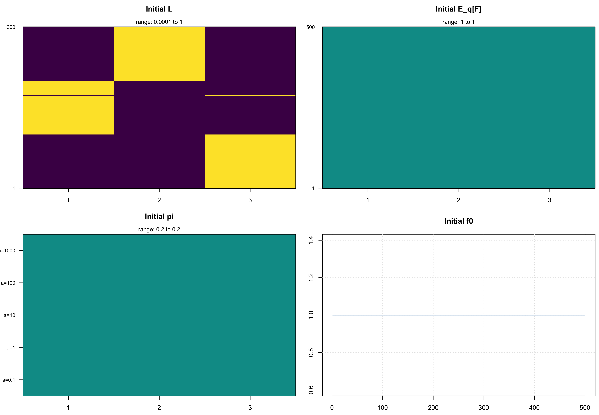
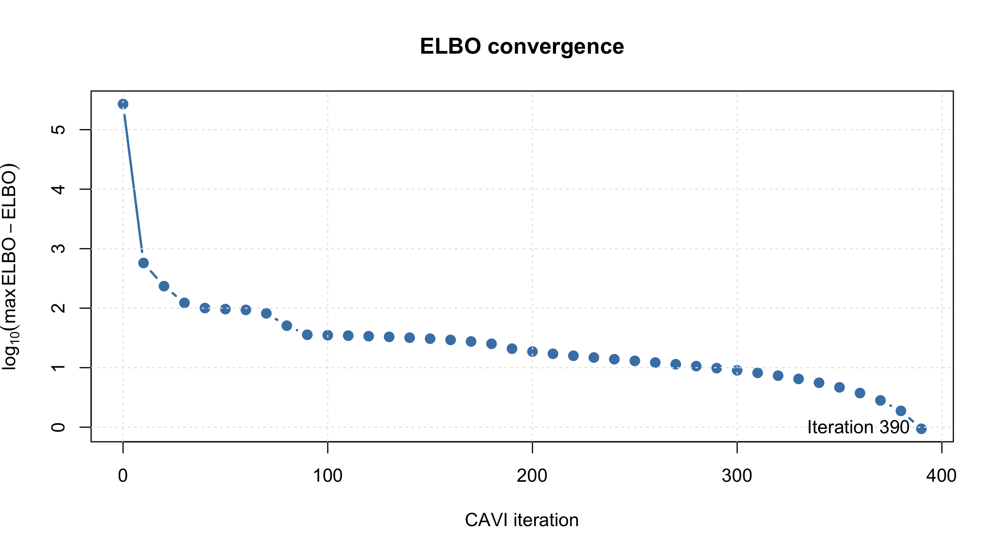
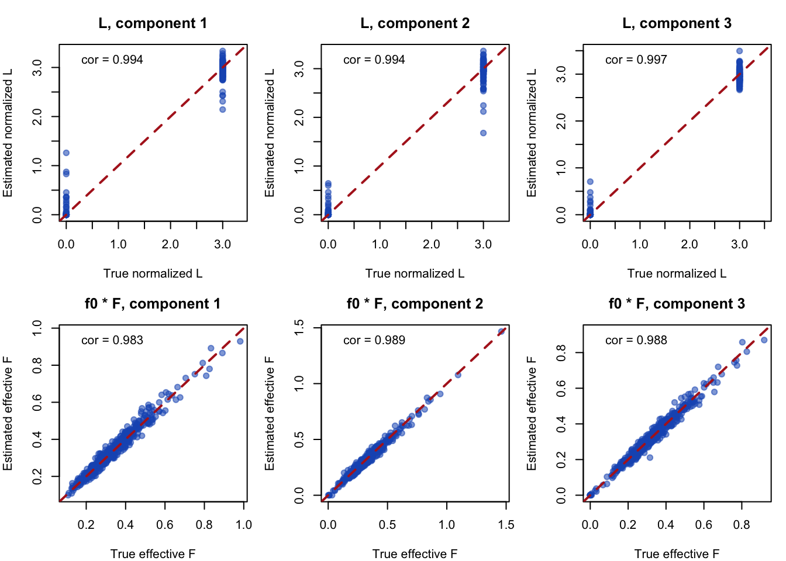
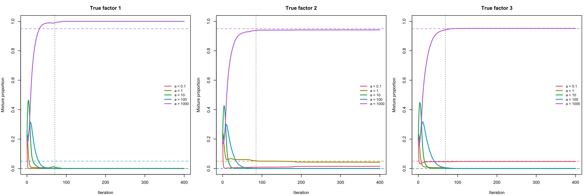
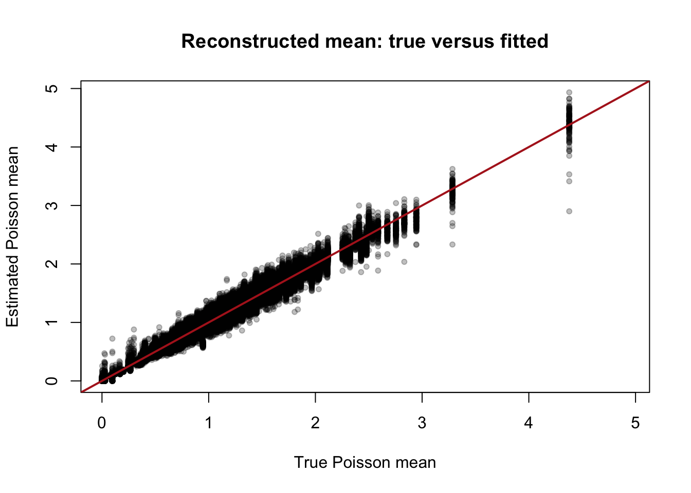
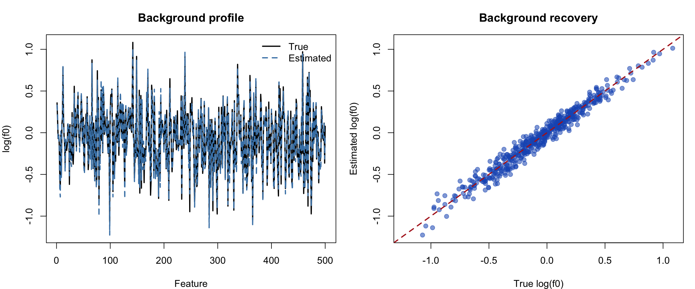
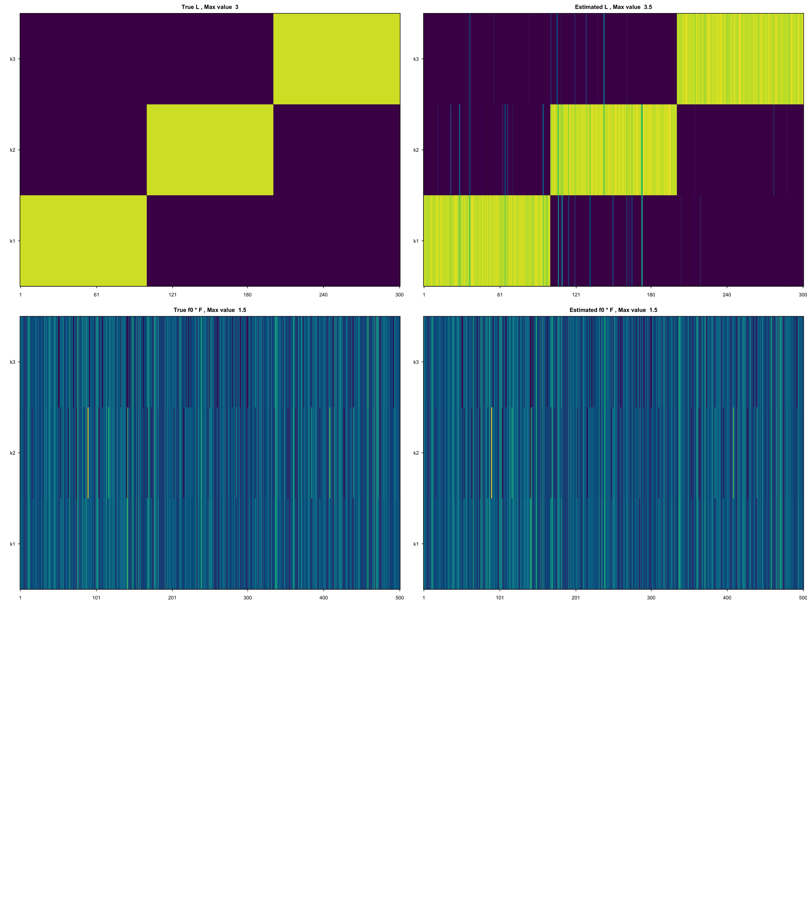
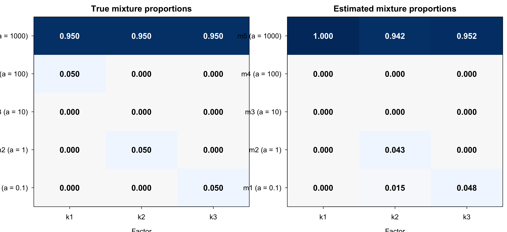

Last updated: 2026-10-15
Checks: 7 0
Knit directory: background/
This reproducible R Markdown analysis was created with workflowr (version 1.7.2). The Checks tab describes the reproducibility checks that were applied when the results were created. The Past versions tab lists the development history.
Great! Since the R Markdown file has been committed to the Git repository, you know the exact version of the code that produced these results.
Great job! The global environment was empty. Objects defined in the global environment can affect the analysis in your R Markdown file in unknown ways. For reproduciblity it’s best to always run the code in an empty environment.
The command set.seed(20260201) was run prior to running
the code in the R Markdown file. Setting a seed ensures that any results
that rely on randomness, e.g. subsampling or permutations, are
reproducible.
Great job! Recording the operating system, R version, and package versions is critical for reproducibility.
Nice! There were no cached chunks for this analysis, so you can be confident that you successfully produced the results during this run.
Great job! Using relative paths to the files within your workflowr project makes it easier to run your code on other machines.
Great! You are using Git for version control. Tracking code development and connecting the code version to the results is critical for reproducibility.
The results in this page were generated with repository version 28153d2. See the Past versions tab to see a history of the changes made to the R Markdown and HTML files.
Note that you need to be careful to ensure that all relevant files for
the analysis have been committed to Git prior to generating the results
(you can use wflow_publish or
wflow_git_commit). workflowr only checks the R Markdown
file, but you know if there are other scripts or data files that it
depends on. Below is the status of the Git repository when the results
were generated:
Ignored files:
Ignored: .DS_Store
Ignored: .RData
Ignored: .Rhistory
Ignored: .Rproj.user/
Ignored: analysis/.DS_Store
Ignored: local/
Untracked files:
Untracked: analysis/.ipynb_checkpoints/
Untracked: analysis/ebpmf_gamma.Rmd
Untracked: code/
Unstaged changes:
Modified: analysis/bg_news.Rmd
Modified: analysis/bg_newsbadsample.Rmd
Modified: analysis/em.Rmd
Deleted: analysis/main.Rmd
Note that any generated files, e.g. HTML, png, CSS, etc., are not included in this status report because it is ok for generated content to have uncommitted changes.
These are the previous versions of the repository in which changes were
made to the R Markdown (analysis/bg_sim.Rmd) and HTML
(docs/bg_sim.html) files. If you’ve configured a remote Git
repository (see ?wflow_git_remote), click on the hyperlinks
in the table below to view the files as they were in that past version.
| File | Version | Author | Date | Message |
|---|---|---|---|---|
| Rmd | 28153d2 | jiheeyy | 2026-10-15 | wflow_publish("analysis/bg_sim.Rmd") |
| Rmd | 754128c | jiheeyy | 2026-10-14 | Resolve merge conflict in index.Rmd (keep remote version) |
| html | 754128c | jiheeyy | 2026-10-14 | Resolve merge conflict in index.Rmd (keep remote version) |
| html | a3c6d8f | jiheeyy | 2026-09-08 | Build site. |
| Rmd | 88c2d50 | jiheeyy | 2026-09-08 | Publish the initial files for myproject |
source(here("code", "bg_implement.R"), local = TRUE)
source(here("code", "bg_post.R"), local = TRUE)Run ebpmf-bg full loop on simulated data.
a_grid <- c(0.1, 1, 10, 100, 1000)
pi_mat <- cbind(
mostly_background = c(0, 0, 0, 0.05, 0.95),
broad_signal = c(0, 0.05, 0, 0, 0.95),
near_zero_signal = c(0.05, 0, 0, 0, 0.95)
)
# Create data
settings <- list(
n = 300,
p = 500,
K = 3,
a = a_grid, # length-M Gamma shape list
pi = pi_mat,
seed = 1L,
loading_mode = "single" # "single", "primary_secondary"
)
synthetic <- do.call(simulate_background_model, settings)
# Experiment switches.
init <- "deviance_kmeans" # "gamma", "deviance_kmeans", or "fasttopics"
oracle_f0 <- FALSE
oracle_pi <- FALSE
oracle_l <- FALSE
# Fit controls.
max_niter <- 400L
elbo_every <- 10L
fit_elbo_tolerance <- 1e-6
fit_elbo_patience <- 3Linitialization <- initialize_experiment_state(
synthetic = synthetic,
settings = settings,
init = init,
oracle_f0 = oracle_f0,
oracle_pi = oracle_pi,
oracle_l = oracle_l
)
state <- initialization$state
initialization_method <- initialization$method
# initialization$state retains the starting values for the diagnostic plots.# Main fitting
main_fit <- run_ebpmf_bg_cavi(
state,
synthetic$X,
settings$a,
max_niter = max_niter,
elbo_every = elbo_every,
fit_elbo_tolerance = fit_elbo_tolerance,
fit_elbo_patience = fit_elbo_patience,
estimate_pi = !oracle_pi,
estimate_f0 = !oracle_f0
)
state <- main_fit$state
elbo_trace <- main_fit$elbo_trace
pi_trace <- main_fit$pi_trace
niter <- main_fit$completed_niter
# Summarize ELBO changes between stored checkpoints.
elbo_comparison <- data.frame(
iteration = elbo_trace$iteration[-1L],
elbo = tail(elbo_trace$elbo, -1L),
change = diff(elbo_trace$elbo),
relative_change = elbo_trace$relative_change[-1L]
)
fit_summary <- data.frame(
maximum_iterations = max_niter,
completed_iterations = niter,
elbo_every = elbo_every,
converged = main_fit$converged,
oracle_f0 = oracle_f0,
oracle_pi = oracle_pi,
oracle_l = oracle_l,
initialization = initialization_method
)
tail(elbo_comparison, 10L) iteration elbo change relative_change
31 310 -137287.5 0.8286180 6.035604e-06
32 320 -137286.7 0.8508826 6.197815e-06
33 330 -137285.8 0.8726944 6.356732e-06
34 340 -137284.9 0.8923574 6.499999e-06
35 350 -137284.0 0.9088632 6.620271e-06
36 360 -137283.1 0.9217690 6.714323e-06
37 370 -137282.1 0.9310363 6.781873e-06
38 380 -137281.2 0.9368710 6.824421e-06
39 390 -137280.3 0.9396031 6.844369e-06
40 400 -137279.3 0.9396323 6.844628e-06fit_summary maximum_iterations completed_iterations elbo_every converged oracle_f0
1 400 400 10 FALSE FALSE
oracle_pi oracle_l initialization
1 FALSE FALSE deviance k-means LThe plots below provide diagnostic tools for interpreting EBPMF-BG
runs. For the functions called in this section, see
bg_post.R.
The panels below show the state that enters the main CAVI loop. The
initial feature matrix is the variational mean qF$mean.
Factor columns are shown in their actual fitting order, without post-hoc
alignment to the simulated truth.
plot_initial_parameters(initialization$state, settings$a)
Plot the log10 gap from the best recorded ELBO, omitting the final checkpoint.
plot_elbo_gap(elbo_trace)
Factor labels and scales are not intrinsically identifiable: components may be permuted. The comparisons below therefore align components by their rate contributions (with cosine similarity) and adopt a common scale before assessing recovery.
## Match fitted components to the generating components without rescaling them.
L_true <- synthetic$L
F_true <- synthetic$F
f0_true <- synthetic$f0
pi_true <- synthetic$pi
B_true <- sweep(F_true, 1L, f0_true, "*")
K <- ncol(L_true)
aligned <- align_k(synthetic, state)
L_hat <- aligned$L
F_hat <- aligned$F
B_hat <- aligned$B
pi_hat <- aligned$pi
f0_hat <- state$f0
best_permutation <- aligned$permutation
## L[, k] * B[, k]' is unchanged if L[, k] is divided by c and
## B[, k] is multiplied by c. Use mean(L[, k]) = 1 as a convention.
true_canonical <- canonicalize(L_true, B_true)
hat_canonical <- canonicalize(L_hat, B_hat)
L_true_plot <- true_canonical$L
L_hat_plot <- hat_canonical$L
B_true_plot <- true_canonical$B
B_hat_plot <- hat_canonical$B
plot_factor_recovery(true_canonical, hat_canonical)
| Version | Author | Date |
|---|---|---|
| a3c6d8f | jiheeyy | 2026-09-08 |
plot_mixprop_convergence(pi_trace, pi_true, pi_hat, best_permutation, settings$a)
| Version | Author | Date |
|---|---|---|
| a3c6d8f | jiheeyy | 2026-09-08 |
$alignment
true_factor estimated_column
1 k1 1
2 k2 2
3 k3 3
$stabilization
factor iteration
1 k1 71
2 k2 85
3 k3 69
$final_proportions
mixture factor generating estimated
1 a=0.1 k1 0.00 2.067817e-11
2 a=1 k1 0.00 2.374241e-11
3 a=10 k1 0.00 3.833721e-11
4 a=100 k1 0.05 1.619139e-10
5 a=1000 k1 0.95 1.000000e+00
6 a=0.1 k2 0.00 1.502908e-02
7 a=1 k2 0.05 4.298307e-02
8 a=10 k2 0.00 6.341259e-11
9 a=100 k2 0.00 2.047964e-10
10 a=1000 k2 0.95 9.419879e-01
11 a=0.1 k3 0.05 4.788494e-02
12 a=1 k3 0.00 3.409379e-10
13 a=10 k3 0.00 5.072282e-11
14 a=100 k3 0.00 2.427048e-10
15 a=1000 k3 0.95 9.521151e-01Solid lines show the estimated mixture proportions recorded during the main CAVI run, while matching dashed lines show the generating proportions.
plot_lambda(L_true, B_true, L_hat, B_hat)
| Version | Author | Date |
|---|---|---|
| a3c6d8f | jiheeyy | 2026-09-08 |
correlation relative_error rmse
1 0.9800146 0.07716166 0.08205771The reconstructed-rate plot compares \(\lambda=L(f_0F)^\mathsf{T}\), the quantity that directly determines the Poisson likelihood. Note strong rate recovery is possible even when the individual factors are not recovered exactly.
plot_bgquality(L_true, L_hat, f0_true, f0_hat)
| Version | Author | Date |
|---|---|---|
| a3c6d8f | jiheeyy | 2026-09-08 |
correlation log_correlation log_rmse median_fold_error
1 0.9838248 0.9819057 0.06962263 1.047052The plots compare the raw true and estimated f0
values.
plot_lf(true_canonical, hat_canonical)
| Version | Author | Date |
|---|---|---|
| a3c6d8f | jiheeyy | 2026-09-08 |
plot_mixprop(pi_true, pi_hat, settings$a)
| Version | Author | Date |
|---|---|---|
| a3c6d8f | jiheeyy | 2026-09-08 |
The annotated cells report \(\pi_{mk}\) directly. Columns of the
estimated matrix use the same factor matching as the preceding plots,
while rows correspond to the Gamma components identified by their shape
parameters settings$a.